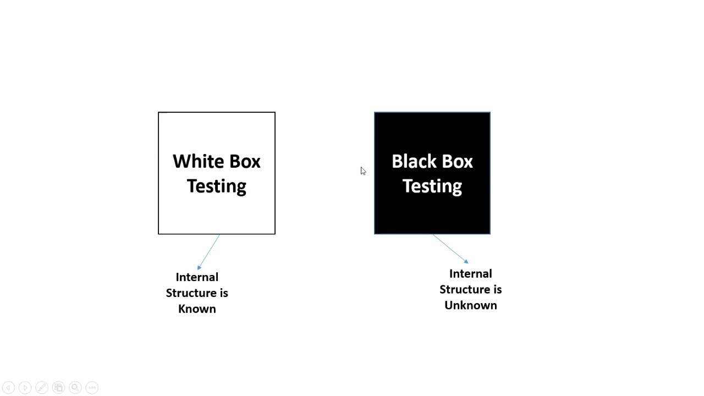

Testmetoder visar helt enkelt hur testning skall gå till, dem delas upp i 2 olika kategorier Statisk samt Dynamisk testning. Statisk testning innebär att ifrågasätta och undersöka programkoden om den är korrekt utan att behöva exekvera den. dynamisk testning innebär att studera programvaran när den exekveras. Dynamiska tester är i sin tur indelade i ”black box”- och ”white box” testetning. 
- -Statisk testning: fokuserar på att undersöka och granska programkod, dokumentation och design
- -Dynamisk testning: fokuserar på kvalitetssäkring och systemfunktionalitet
En fördel med statisk testning är att den kan utföras innan programmet är färdig byggd vilket ger testaren möjlighet att upptäcka fel relativt tidigt, t.ex. i ett krav och åtgärda dessa fel innan fortsatt programmering. Statisk och dynamisk testning är beroende av varann. Dem kompleterar varandra helt enkelt.
Vad är då testnivåer? Det är en samling av olika testaktiviter som har en målsättning och utförs tillsammans, dem kallas även testfaser.
- Vad är Blackbox Testing?: Blackbox-testning är en typ av testning som inte kräver kunskap om mjukvarans interna arbete för att fortsätta testa. Det är en hög testnivå. Meningen och huvudsyftet med blackbox-test är att kontrollera programmets beteende.
- Vad är Whitebox Testing?: Whitebox-testning är en typ av testning som kräver kunskap om mjukvarans interna arbete för att fortsätta testningen. Det är test på låg nivå och anser att täcka koddeklarationer, grenar, vägar, förhållanden etc.